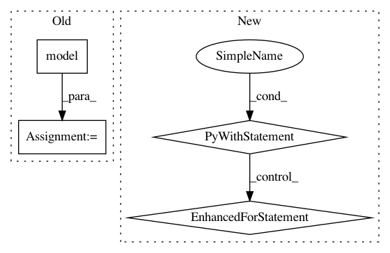

4be0f638ed7b73dbf0777320df374e91cce79144,models/official/retinanet/retinanet_model.py,,_model_fn,#Any#Any#Any#Any#Any#Any#,180
Before Change
Returns:
tpu_spec: the TPUEstimatorSpec to run training, evaluation, or prediction.
cls_outputs, box_outputs = model(
features,
min_level=params["min_level"],
max_level=params["max_level"],
num_classes=params["num_classes"],
num_anchors=len(params["aspect_ratios"] * params["num_scales"]),
resnet_depth=params["resnet_depth"],
is_training_bn=params["is_training_bn"])
levels = cls_outputs.keys()
// First check if it is in PREDICT mode.
if mode == tf.estimator.ModeKeys.PREDICT:
After Change
is_training_bn=params["is_training_bn"])
if params["use_bfloat16"]:
with bfloat16.bfloat16_scope():
cls_outputs, box_outputs = _model_outputs()
levels = cls_outputs.keys()
for level in levels:
cls_outputs[level] = tf.cast(cls_outputs[level], tf.float32)
box_outputs[level] = tf.cast(box_outputs[level], tf.float32)
else:
cls_outputs, box_outputs = _model_outputs()
levels = cls_outputs.keys()
In pattern: SUPERPATTERN
Frequency: 3
Non-data size: 4
Instances
Project Name: tensorflow/tpu
Commit Name: 4be0f638ed7b73dbf0777320df374e91cce79144
Time: 2018-04-14
Author: huangyp@google.com
File Name: models/official/retinanet/retinanet_model.py
Class Name:
Method Name: _model_fn
Project Name: pytorch/tutorials
Commit Name: 0ad33d606682537466f3430fc6d6ac7d47460f1a
Time: 2018-04-24
Author: soumith@gmail.com
File Name: beginner_source/nlp/deep_learning_tutorial.py
Class Name:
Method Name:
Project Name: jindongwang/transferlearning
Commit Name: fbec92e2363493126b4927a167039fbd037f17bc
Time: 2019-10-21
Author: 1299192934@qq.com
File Name: code/deep/DAN/DAN.py
Class Name:
Method Name: test